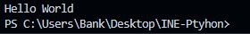
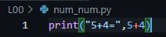

Introduction
Python

วิธีดาวน์โหลด Python
ความเป็นมาของ Python
ภาษาไพทอน (Python programming language) เป็นภาษาโปรแกรมแบบอินเทอร์พรีเตอร์ ที่สร้างโดย กีโด ฟาน รอสซัม (Guido van Rossum) ในพ.ศ. 2533 ปัจจุบันดูแลโดย มูลนิธิซอฟต์แวร์ไพทอนจุดเด่นของ Python
ไพทอนเป็นภาษาสคริปต์ ทำให้ใช้เวลาในการเขียนและคอมไพล์ไม่มาก ทำให้เหมาะกับงานด้านการดูแลระบบ (System administration) เป็นอย่างยิ่ง ได้มีการสนับสนุนภาษาไพทอนโดยเป็นส่วนหนึ่งของระบบปฏิบัติการยูนิกซ์, ลินุกซ์ และสามารถติดตั้งให้ทำงานเป็นภาษาสคริปต์ของวินโดวส์ ผ่านระบบ Windows Script Host ได้อีกด้วย และ Python เองก็ได้ถูกนำมาพัฒนา Web application อย่างแพร่หลาย ซึ่งมี Framework สำหรับทำเว็บของ Python ที่ได้รับความนิยมอย่างมากคือ Django ไวยากรณ์อ่านง่าย
ทำไมถึงเลือก Python
เนื่องจากสถิติในปัจจุบันทำให้สามารถรู้ได้ว่า python เป็นที่นิยมอย่างมากจากสถิตินี้
คำสั่ง print ของ Python
คำสั่ง print ของ Pthon คือ print() โดยสิ่งที่ python สามารถสั่ง print ได้มีดังนี้1.Print String

2.Print Numeric
3.Print String+String
4.Print String+Numeric

5.Print Numeric+Numeric